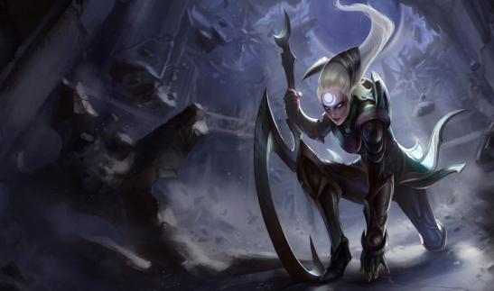
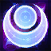
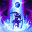

Diana, O Escárnio da Lua
Rota
-
Passiva
 -
Habilidade Q
GOLPE CRESCENTE
Faz um disparo de energia lunar em forma de arco, causando Dano Mágico. Afeta os inimigos atingidos com Plenilúnio, revelando-os por 3s se não estiverem furtivos.
Habilidade W
CASCATA LÍVIDA
Diana cria três esferas orbitantes que detonam ao contato com inimigos, causando dano em área. Ela também ganha um escudo temporário que absorve dano. Se a terceira esfera detonar, o escudo recebe resistência adicional.
Habilidade E
ZÊNITE LUNAR
Torna-se a encarnação viva da lua vingativa, avançando contra um inimigo e causando Dano Mágico. Zênite Lunar não tem Tempo de Recarga ao avançar em um inimigo afetado por Plenilúnio. Todos os outros inimigos terão o efeito de Plenilúnio removido independentemente de terem sido o alvo de Zênite Lunar.
Habilidade R
COLAPSO MINGUANTE
Diana revela e atrai todos os inimigos próximos e reduz a velocidade deles. Se Diana atrair um ou mais Campeões inimigos, o Plenilúnio cai sobre ela depois de um breve intervalo, causando Dano Mágico em uma área ao seu redor, aumentado a cada alvo atraído além do primeiro.
Habilidades
ESPADA DE PRATA LUNAR
Cada terceiro ataque atinge os oponentes próximos, causando Dano Mágico adicional. Depois de conjurar uma Habilidade, Diana recebe Velocidade de Ataque em seus próximos 3 Ataques.
Curiosidades
Empunhando sua espada lunar crescente, Diana luta como uma guerreira dos Lunari, um credo quase extinto nas terras ao redor do Monte Targon. Vestida com uma armadura brilhante da cor da neve de inverno noturna, ela é a personificação do poder da lua prateada. Dotada com a essência de um Aspecto de além do cume de Targon, Diana já não é mais totalmente humana e tem dificuldades para dominar seu poder e propósito neste mundo.